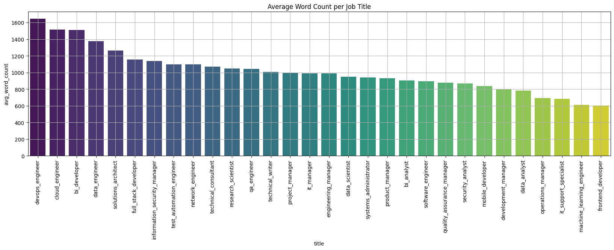

This Graph shows the distribution of the number of most common words in the resume
Data Exploration
Data Preprocessing Methodology
The data we initially scraped is in a raw format, consisting of text files without a specific structure. To begin our analysis, we compiled all the text files into a single CSV file, which allowed us to start extracting meaningful insights. The data consists of resumes in plain text, containing a mix of alphabets, digits, and special characters, with no standardized formatting. Hence, the cleaning process involved several stages, including text standardization, pattern recognition using regular expressions (regex), and applying natural language processing (NLP) techniques.
Below are the key steps we have taken:
- Standardization and Text Preprocessing
- Lowercasing: We started by converting all text to lowercase to ensure uniformity across the dataset, eliminating case-sensitive variations.
- Removal of Unnecessary Elements: We removed punctuation, special characters, URLs, and numerical values, depending on the specific requirements of the task.
- Tokenization: We applied tokenization to split the text into individual words or phrases.
- Stop Word Removal: Common, non-informative words (e.g., "the", "and", "is") were filtered out to reduce noise and improve the focus on more meaningful terms.
- Stemming and Lemmatization: We applied stemming or lemmatization to reduce words to their root or base forms (e.g., "running" becomes "run").
- Data Cleaning and Filtering
- Removal of Empty Files: We identified some files with a word count of zero, which indicated that they were empty. These were removed from the dataset.
- Language Filtering: Four files were written in languages other than English. Since our analysis is focused on English-language resumes, these non-English files were removed.
- Handling Corrupted Data: Some resumes had a high proportion of special characters (around 50% of the word count), suggesting they were corrupted. These files were flagged for further inspection and will be tested with the NLP model before deciding whether to keep or remove them.
- Addressing User Errors: We observed that a few resumes began with the word "continued," likely due to user errors. These entries were removed to ensure data consistency.
- Removal of Redundant Text: A common phrase, "Candidate has been called," appeared in several resumes, likely as part of a feedback section. Since this phrase did not provide useful information, it was removed from the dataset.
- Elimination of Duplicates and Missing Data
- Text Normalization and Refinement
- Spell Correction: We applied spell correction techniques to correct common spelling mistakes and enhance the text quality.
- Text Normalization: Additional normalization techniques were applied to ensure consistency in the format of the text (e.g., handling variations like "USA" and "U.S.A.").
- Next Steps – NLP Modeling
- The next phase of the project involves training an NLP model to gain deeper insights into the data.
Data Exploration


The Word Cloud visually represents the most frequent terms in the dataset, where larger words indicate higher frequencies.
This provides a quick, intuitive overview of the predominant words or themes in the dataset.
Hence words like 'System' , 'Project', 'Data' , 'Management' appear most frequenctly indicating that they are the dominant words.
When examining a category distribution pie chart, the objective is to comprehend how the data is segmented across various categories. This visualization is particularly effective for comparing the proportions of individual categories to the entire dataset. From the chart beside, it is evident that cloud engineers and data analysts represent the most popular job categories, whereas technical writers and systems administrators rank as the least popular.

This bar chart illustrates the number of resumes available for each job title. Notably, Data Engineer, Full Stack Developer, and Product Manager are among the most commonly available positions.
A heatmap displays the correlation coefficients between multiple variables in a dataset, helping to identify relationships — both positive and negative—among them.

A violin plot of skills by education level is a powerful visualization tool that combines aspects of box plots and density plots to showcase the distribution of skill levels across different educational backgrounds.This helps reveals the distribution and density of skill levels for each education category.

This bar chart displays the Average word count per job title. Devops Engineer being teh highest with a count of close to 1600 and frontend developer having word count of 600.
This histogram displays the number of words in resumes, offering valuable insights into the length trends among candidates. The distribution indicates whether applicants lean towards concise or detailed resumes. Notably, the majority of resumes in our dataset average around 500 words, suggesting a preference for shorter and more succinct presentations.
Stacked area chart is used to show trends over time for multiple categories like skills, education ,experience while illustrating their cumulative effect. It allows for an easy comparison of the total and individual contributions of each category.

A pair plot of skills, education, experience, and certifications can provide valuable insights into the relationships and interactions between these variables in a dataset related to job applicants, employees, or a specific field.

A bubble chart depicting the relationship between word count, experience, and education levels provides a multidimensional view of how these variables interact in resumes. Each bubble represents an individual resume, where the x-axis indicates word count, the y-axis represents years of experience, and the size of the bubble corresponds to the education level (e.g., smaller bubbles for Bachelor’s degrees and larger ones for Master’s or PhDs).